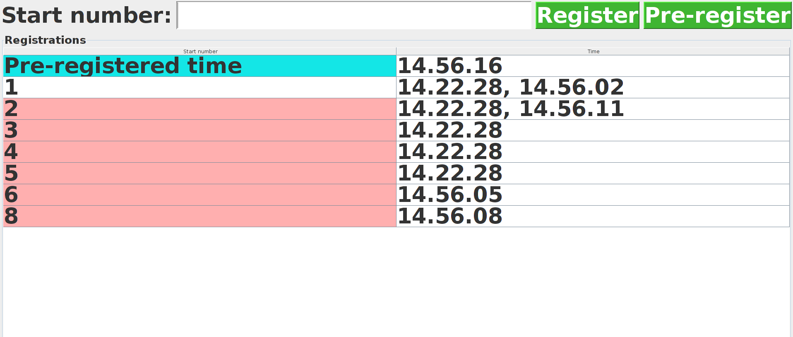

Här finner ni dokumentation om systemets uppbyggnad. Projektet finner ni på GitHub. Status av senaste build kan ni hitta på Travis.

Systemet är uppdelat i två stycken delprogram. Ett registreringsprogram som används ute i fält för att registrera start- och måltider samt ett sorteringsprogram som sorterar tidsdata och genererar resultatfiler.
Delprogrammen är sammankopplade genom att användarna av registreringsprogrammet manuellt överför (usb, mail osv. ) tidsfilerna som genereras av registreringsprogrammet till användaren av sorteringsprogrammet.
| Paket | Beskrivning |
| GUI | Innehåller de klasser som bygger upp programmets användargränssnitt |
| GUI.model | Här finns klasser som hanterar tävlingstider och registreringar |
| IO | Paket för all hantering av input och output till filer |
| Sorter | Har de klasser som sorterar resultatsfiler |
| Sorter.model | Innehåller databasen för tävlande, tider, tävlingar samt konfigurationsstöd |
Till programmet hör även två paket med testfiler.
Nedan beskrivs delprogrammen mer ingående var för sig.
Registreringsprogrammet används ute i fält för att registrera start- och sluttider. Programmet genererar textfiler, så kallade starttidsfiler, på formatet:
startnummer; tid, med filtypen .txt.
Exempel:
StartNr; Namn
1; Anders Asson
2; Bengt Bsson
3; Chris Csson
4; David Dsson
5; Erik Esson
Varje person som registrerar tider kör en egen intans av programmet och genererar en egen tidsfil. Dessa filer används sedan av sorteringsprogrammet för att generera en resultatfil.
Programmet har ett grafiskt användargränssnitt och ska kunna användas av personer med liten datorvana.

Programmet är uppbyggt efter MVC mönstret. Figuren nedan ger en något förenklad överblick av programmet.
GUI klassen består egentligen av ett flertal mindre klasser som tillsammans utgör användargränssnittet.
Main-metoden som skapar de olika delklasserna och startar programmet finns i klasen RegistrationStarter,
som befinner sig i GUI-paketet.
Modellen utgörs av klassen ContestantTimes som är Observable.
Klassen lagrar vilka tider som är associerade med ett visst startnummer.
För att registreringar inte ska gå förlorade skrivs alla ändringar till fil direkt.
Utgörs huvudsakligen av klasserna RegistrationGUI och EntryList.
Utöver dessa finns ett antal mindre klasser som motsvarar olika komponenter i användargränssnittet
som exempelvis knappar och textfält.
RegistrationGUI motsvarar och bygger upp fönstret.
RegistrationGUI har en instans av controllern (TimeRegistrationHandler).
Gränsnittets komponenter använder denna för att uppdatera modellen.
EntryList utgör tabellen av startnummer och tider i gränssnittet.
Klassen observerar modellen och uppdaterar sitt innehåll vid förändring.
Utgörs av klassen TimeRegistrationHandler.
Klassen innehåller metoder för att uppdatera modellen.
Programmet sorterar ihop flera start- och måltidsfiler. Utifrån tidsfilerna och en namnifl genereras sedan en resultatfil. Resultatfilens utseende varierar beroende på typ av lopp, den innehåller information om exempelvis start- och sluttider, varvtider, totaltider osv.
Ex. resultatfil
Först beskrivs de olika delarna av programmet och sedan hur de hänger ihop.
Programmet kan hantera flera olika typer av lopp, maratonlopp, varvlopp (och etapplopp).
Vilken typ av lopp som resultat ska genereras för samt andra parametrar som exmeplvis
minsta möjliga totaltid anges i en separat konfigurationsfil, config.ini.
Klassen Configuration ansvarar för de olika konfigurationsparametrarna i config.ini, samt är ansvarig för
förändring av konfigurationsparametrar.
Javas standardklass java.util.Properties används för att hantera parametrarna.
Configfilen måste finnas i en undermapp i programmappen som heter data. Om denna ej existerar så kommer den skapas av programmet.

Den abstrakta klassen AbstractContestant beskriver en allmän deltagare.
För varje tävlingstyp finns sedan en konkret klass som bekriver deltagarna i den tävlingstypen.
Template method används vid utrskrift av resultat för de olika typerna av deltagare.
Factory method-mönstret används för att skapa olika typer av deltagare beroende på vilken typ av lopp som angets i konfigurationsfilen.
Detta görs av klassen ContestantFactory.
ContestantProperties innehåller övrig information om varje deltagare, t.ex klubb, sponsring etc. Då denna information varierar från tävling till tävling lagras
den i en HashMap. Vilken information som skall lagras framgår av headern i namnfilen och vid utskrift så skrivs endast information som fanns i namnheadern ut.
På motsvarande sätt som för tävlingsdeltagare används Factory method-mönstret i klassen CompetitionFactory
för att skapa olika typer av tävlingar utifrån vad som anges i konfigurationsfilen.
Här finns gemensamma klasser för inläsning och utskrift av filer. För att läsa CSV används biblioteket JCSV.
Klassen Time används för att representera tider inom programmet. Här finns även metoder för beräkningar av tider.
Database ansvarar för lagring av Contestant-objekt. Objekten lagras internt i en TreeMap som sorterar med avseende på startnummer.
Utifrån konfigurationsfilen skapas rätt typ av tävling. Tävlingen har en Database som utifrån innehållet i tidsfilerna och tävlingstyp fylls med rätt typ av tävlingsdeltagare.
Varje typ av tävling håller själv reda på hur dess resultatfil ska skrivas ut. Motsvarande gäller för de olika typerna av tävlingsdeltagare som håller reda på
hur deras tider och information ska skrivas ut.
För närvarande uppdelat i två paket (test och test.RefContestantTest) men målet är dessa skall slås ihop i paketet test. I paketet finns enhetstester för koden.
Vi använder ramverket JUnit för att skriva tester.
Parametrar skrivs på formen "<key>=<value>". En rad får endast innehålla en parameter. Kommentarer inleds med '#' i början av raden.
Tabellen nedan beskriver gilitga nyckel-värde par för sorteringsprogrammet.
| Key | Value |
|---|---|
| resultFilePath | Sökväg dit resultatfilen ska sparas |
| nameFilePath | Sökvägen till namnfilen |
| startTimeFilePath | Sökvägen till fil med starttider. |
| resultFilePath | Sökvägen till fil med resultattider. |
| shortestPossibleTime | Minsta möjliga tid för ett lopp enligt följande form: "hh.mm.ss". |
| startTimeLimit | Hur lång tid innan nästa målgång räknas som sluttid(varvlopp) form: "hh.mm.ss". |
| resultFormat | CSV eller HTML. Glöm ej att ändra i resultFilePath till den filtyp du vill använda! |
| resultSorted | true eller false |
| raceType | Typ av tävling: marathon, laps |
Tabellen nedan beskriver gilitga nyckel-värde par för registration.properties, vilket hanterar vart programmet läser efter startnr med namn samt tidinläsning.
| Key | Value |
|---|---|
| nameFile | Sökvägen till namnfilen som ska användas |
| timeFile | sökvägen till tidsfilen som ska skrivas till/läsas in |
Systemet använder CSV för att lagring och kommunikation mellan delsystem. Viktiga CSV-filer har en header som beskriver formatet, dvs vilka kolumner som representerar vilka värden.
Filer med registrerade tider har ej nödvändigtvis en header då systemet ej vet om en viss tid i dessa filer representerar en start-, slut eller varvtid.
De flesta automatiserade processer använder sig av ANT. Här dokumenterar vi några av de mest använda.
Kör ant javadoc, öppna
Dokumentation/javadocs/index.html.
Kör ant jar, GUI-programmet lägger sig då i build/jar/program.jar.